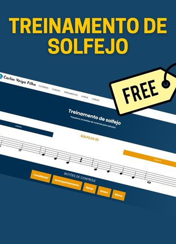
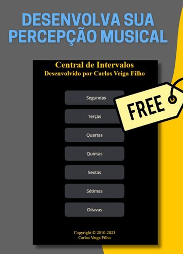
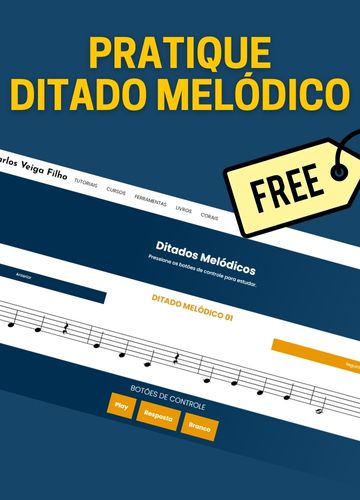

01 / Leitura e canto
Treino de solfejo
Pratique a leitura musical e o canto com os exercícios de solfejo. Comece pelo primeiro treino e siga a sequência.
Praticar solfejoFerramentas gratuitas · Percepção musical
Cante uma melodia, reconheça um intervalo, escreva o que ouviu. Escolha uma ferramenta e faça da prática musical parte do seu dia.
Escolha por onde começar
Acesso gratuito.
Pratique no seu ritmo.

01 / Leitura e canto
Pratique a leitura musical e o canto com os exercícios de solfejo. Comece pelo primeiro treino e siga a sequência.
Praticar solfejo
02 / Relações entre notas
Explore as distâncias entre as notas. Escolha um intervalo na central e pratique sua percepção dessas relações.
Praticar intervalos
03 / Escuta e escrita
Ouça a melodia, tente registrá-la e confira a resposta. Relacione o que você escuta com a escrita na partitura.
Praticar ditado
Para aprofundar seus estudos
Análise Harmônica para Estudantes de Música reúne explicações, exemplos e exercícios para estudar acordes, funções harmônicas, cadências e frases.
O livro também tem uma edição em inglês: Harmonic Analysis for Music Students.
Continue no YouTube